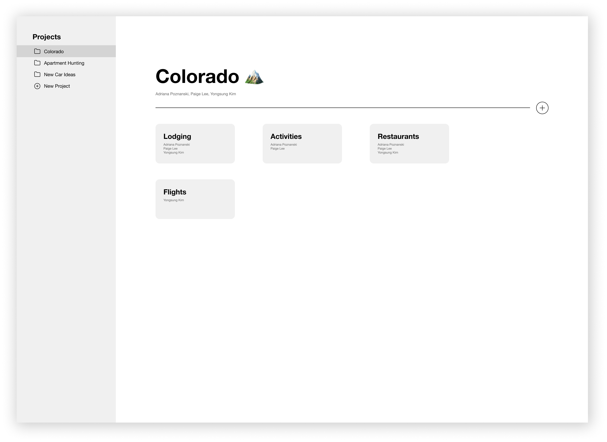
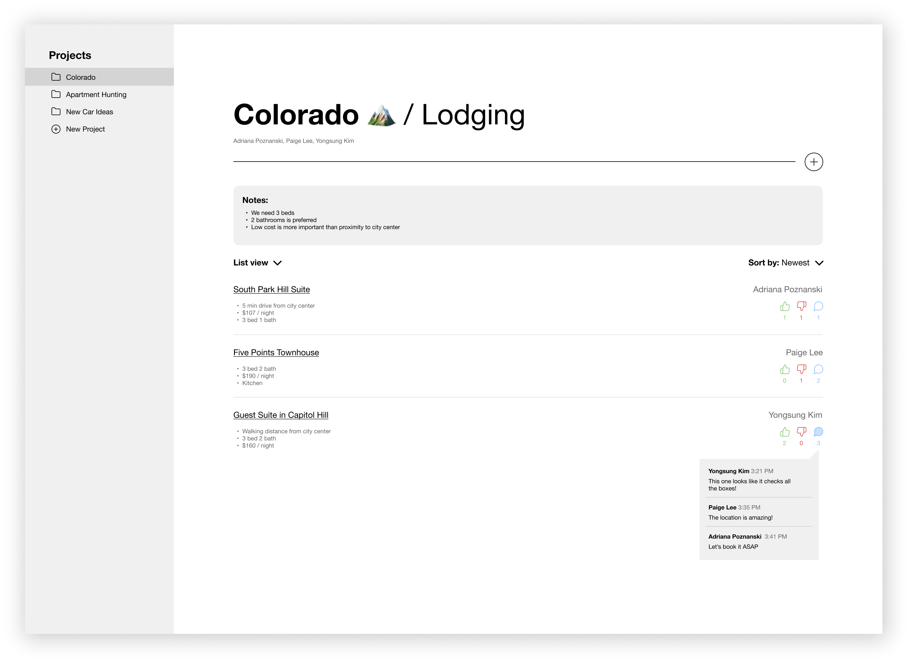
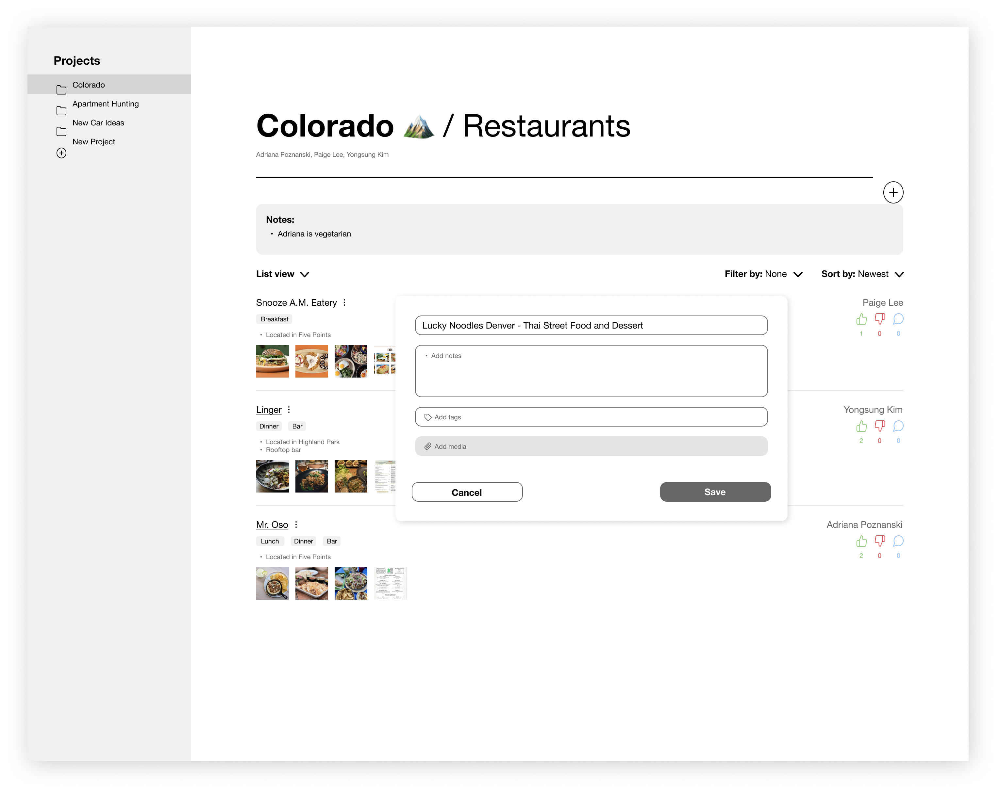

CollabApp
Role
User researcher and product designer
Collaborators
Paige Lee,
Yongsung Kim
Timeline
June 2021 - August 2021
Challenge
People frequently collect, share, organize, and evaluate information in pursuit of a common goal with
others—yet there are few web tools which provide end-to-end support in this process. Existing stand-alone
systems are unwieldy and move the user away from familiar tools and workflows.
Tools such as Google Docs and Sheets help users collect information, but they don't support the creation of
useful organizational structures, making options more difficult to compare. In this project we aimed to uncover
how current systems fail in order to design a better system for collaborative search.
Solution
We based our hypotheses on findings from current literature on collaborative search and sense-making. The
barriers to collaborative research fall into three broad categories: awareness problems (1), communication
problems (2), and sense-making problems (3).
- Awareness is a problem when users don't have adequate knowledge of the search process, results, and constraints of others. This can lead to redundant work and irrelevant results.
- Communication and collaboration problems generally manifest in the feedback process. Poor systematic support for feedback is a particularly acute pain point because it can slow and stop the decision-making process.
- Sense-making problems occur when the system doesn't permit the creation or sharing of informative representations of data. For example, map data, review data, and visual data are poorly integrated in many systems.
We interviewed 20 people who had used tools such as text messaging, Google Docs, Google Sheets, and Notion to complete a collaborative search task in order to explore the shortcomings of current systems. After analyzing our interview data using open coding and thematic analysis, we observed three main findings:
- Current systems lack lightweight (easy to use and understand) features for collection and organization.
- Eliciting timely feedback can be difficult due to arduous feedback formats and information sharing methods.
- The perceived cost of setting up structured systems prevents users from gaining value in the search process.
Design goals
Based on the above findings, we established the following design goals for our interface:
Deciding factors 🗒
Provide a lightweight method for note taking and tagging, and clipping functionality to distinguish the features
of each source.
Feedback 💬
Enable quick feedback on sources and shortlisting capability to aid the decision making process.
Structure 📁
Organize collected information into a meaningful structured system at no cost, providing immediate benefits to
users.
Awareness 🔎
Increase awareness by identifying the task assignments, search
constraints, and individual contributions to avoid redundancy in the research process.
Mockups
Home page for organizing a vacation:
Displays organized structure for subpages and task assignments for increased awareness.

Subpage for organizing lodging search:
Displays search constraints for the entire group and individual contributions for increased awareness. Displays
lightweight note taking functionality that allows users to emphasize deciding factors. Displays quick feedback
functionality that allows users to like or dislike contributions and make direct comments.

Subpage for organizing restaurant search:
Displays shortlisting functionality that allows users to sort by likes and see the most popular contributions.
Displays further lightweight note taking functionality that allows users to add tags and images to their
contributions to facilitate the decision making process.
Video demo of browser tab interaction.
Conclusion
Our interview findings can be used as part of a basis for the design of future collaborative search systems. Because of the time-consuming and information-rich nature of these kinds of tasks, we recommend that future systems incorporate automated elements such as automatic reminders to supply feedback and recommendations for sharing web page elements. I thoroughly enjoyed the research and design aspects of this project, which forced me to face the stubborn issues of collaboration and decision-making with an open mind. This project sparked my interest in social computing, which I hope to explore further in my future work.